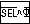
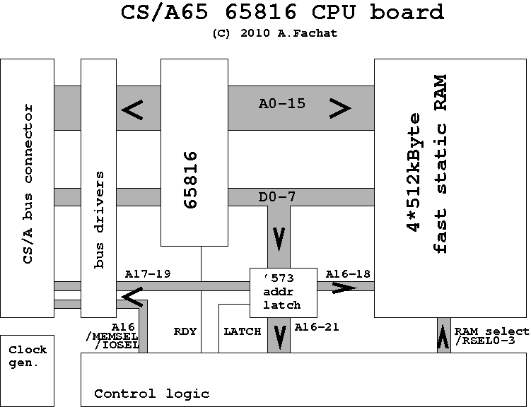

CS/A 65816 CPU
This board implements a 65816 CPU board for the CS/A computer. The CPU runs on eight times the bus clock speed, i.e. for a 1 MHz bus, the CPU runs on 8 MHz. Currently only 1 MHz bus/8 MHz CPU is supported though. It features up to 2 MByte fast RAM that is used at CPU speed. To access the bus memory and I/O, the CPU is slowed down to bus clock speed with the RDY pin.
This board is almost all in standard logic, only for the timing-critical parts I had to use a GAL. The board has been superseded by CPU816 V2 which uses a CPLD as main logic element. If you don't have access to a Xilinx CPLD environment or don't want to use them, you may still want to look at the version 1 page here.
Table of content
Making of
The 65816 board took a long time in the making. First of all, to get the amount of memory I had imagined, I had to resort to using SMD chips for the memory - something I had not done before, but it worked out well.
Also, to get the necessary short delay times in the logic signals, I also had to use a GAL programmable logic IC. I did not want to use such an IC for a long time, as it requires a separate programmer. Also I wanted to build the systems in a ways that are easily understandable from the schematics - in a GAL you can hide a lot of 'magic'.
Then of course there were the first bugs of the brown paper bag
quality - for example I completely forgot the logic about the XBE
signal, i.e. IC21D, IC20B and IC21C.
This of course made the data bus driver for the CS/A bus a continous driver.

A '573 replacement fixed for bank 0 - an essential debug tool.
The suspicions I had made me introduce the RS-Flipflop with IC16A/IC16B as well - it enables the slow memory handling only after the first valid CPU vector pull, i.e. when it reads the RESET vector.
One remarkable thing - once I created the XBE signal the system worked
relatively stable in 1MHz mode, i.e. the circuit to slow down the CPU was essentially
already working right from the start. Even accessing fast memory and executing
code in fast memory was working - but it was not finished yet...
I found that when writing data from slow memory to fast memory, I had stray writes into the corresponding slow memory. E.g. writing to $082000 also wrote the fast bank number into $002000. Later I found out that when writing to any slow memory, the bank address was ORd with the actual data and stored in the memory too.
After a number of timing diagrams drawn - thinking about all the min and max delay
times makes me wonder why these computers actually work at all... - and corresponding
changes in the circuit, I finally found that the new 65816 was so fast in changing
the data lines after Phi2 (in this schematic 8Phi2) going
high, that these changes propagated onto the CS/A data bus before the Phi2
and select lines had a chance to finalize the actually correct memory transfer.
One of the changes made was actually replacing the original 74LS293-based
timing signal generation. The '293 is an asynchronous counter, which I ignored in my
previous designs. I wanted to replace it with a '163, but the '193 was the only
synchronous counter my local chip dealer had in stock where I could get it on short
notice.
In the beginning the /MEMSEL and /IOSEL lines were qualified
by DRDY - which of course does not work when the slow access happens during
Phi2 high: the real access would be at the next Phi2 high
phase, but the select line would already be assigned. Just another of those brown
paper bags... So I had to introduce DSL to qualify the select lines.
As a final change I used the C8Phi2 instead of /8Phi2 as input
to IC12B to move the falling edge of /DSL a little earlier, and it
worked!
Unfortunately my IEEE488 interface broke over the years, so I had to actually resort
to the 'good old days' method of entering data into a computer: entering code as
hex values! Using my 6502 @ASS assembler that I had put into the
used PET Fat40 ROM image did not help, as it does not understand 65816 code.
Finally I built a patched Fat40 ROM that starts up in slow (1 MHz) mode, but switches
to fast (8 MHz) mode by entering SYS65080, see the drivers section below.
By the way, the PET bell tone becomes a very short chirp when run in 8MHz speed :-)
Discussion
In this section I want to discuss various parts of the schematics
IC13 (V6) in the schematics is the new synchronous clock counter
to create the 8 MHz 8Phi2 and Phi2 from the 16 MHz clock.
As both the output signals are inverted, the counter actually counts downward
to ensure that Phi2 phase changes happen at high-low transitions of
8Phi2.
IC15C and IC6C delay 8Phi2 and Phi2
respectively. IC15B also delays 8Phi2, but for the CS/A bus -
this way the board-internal and the bus 8Phi2 signals are decoupled.

A 65816 setup with BIOS, VDC, PETIO and PWR boards. Note that the CPU816 board is green, as opposed to the other boards it has protective paint on it so the SMD soldering would work.
IC14 and IC6A generate the CS/A 2Phi2 signal,
which is used for DRAM control for example on the VDC board.
Together with IC19A and IC19D the shift register
IC14 doubles as signal generator for the Q3 and Q7
signals that are used to control the slowdown of the CPU (see timing section below).
IC21C, IC20B and IC21D generate the XBE
signal that enables the data bus driver IC8 between the CPU data bus and
the CS/A data bus during a slow access.
ICs 5, 7, 9 are the address and control line bus drivers for the CS/A
bus. They can be disabled by the /BE bus signal so that an external
CPU could take over the bus. The main signals used by the AUXCPU board to take over the bus,
namely NOTMAPD, NOEXEC, WPROT and SYNC
are not used here though.
IC19B, IC19C, IC17, the RS flip-flops
IC20C/IC20D and IC16C/IC16D, IC12B
and IC18 implement the timing to slow down the CPU during a slow access.
They mainly create the RDY signal that slows down the CPU, and the
/SL that is active during the actual slow access cycle, see timing below.
IC10 is the typical 65816 data bus latch to create the address lines
A16-23. IC20A creates the latch signal using the
8Phi2 cpu clock and the /RDY line to ensure the address
is not latched when the CPU is waiting for a data transfer.
The RS flip-flop IC16A/IC16B detects the first valid vector pull - i.e.
when the CPU reads the reset vector. This is (may be?) necessary to avoid that
bogus slow memory access cycles are executed before a valid address is used.
In particular it is avoided that the first vector is read in the middle of a slow
memory access (as RDY is not obeyed during /RES, the first
cylce does not wait for a previous - bogus - access to finish).
The RS flip-flop IC21A/IC21B is used to determine the BOOT mapping.
During boot, the CS/A bus (slow) memory is mapped into the low 64k address. This
allows to boot the CPU using the standard BIOS ROM. But accessing the fourth RAM
IC (/RSEL3, meaning banks $18-$1f) switches the configuration
so that bank 0 is now filled with fast RAM - except the I/O area at $e800-$efff
and the video memory area at $8000-$87ff. The select signals for these
memory areas are provided by IC4.
IC11 is the programmable logic IC that does a lot of the
address decoding.
Finally ICs 1, 2, 3, 23 are the 4 512k static RAM chips that provide
the onboard 2 MByte fast RAM.
Timing - low resolution
This section describes the basic low-res
timing for the different timing
signals that control the access to the slow memory. Please use the
first timing diagram as sample reference.
I used this diagram to find out where the bank address could possibly be written
into the slow memory as a stray write.
{kind=link}
In the first line you see 8Phi2, the main CPU clock signal. As you can see
a single cycle is covered by 1cm paper (one square is 5mm by 5mm). The Phi2
signal in the next line visualizes the actual speed difference between the 65816 and the
bus (slow memory) access.
What is shown in the diagram is actually five memory accesses - the first slow, then three fast ones, and then a slow one again (Note that the comments on the top of the diagram are not entirely consistent).
The next two lines show the signals Q3 and Q7. These signal control
the start and end of the actual slow access respectively. They are generated by ORing the
correct outputs of the shift register IC14 that shifts Phi2 with
the clock 8Phi2.
When the 65816 puts a slow
address on the address lines, it can do so
at any of the eight 8Phi2 cycles that make up one Phi2 cycle.
When that happens, the GAL IC11 generates the /SLOWMEM signal.
/SLOWMEM is clocked by 8Phi2 to create RRDY - any
floating address lines should have stabilized then. When RRDY becomes active,
the IC20C/IC20D flip-flop deasserts RDY. This happens directly
after 8Phi2 went high, so RDY always goes high when 8Phi2
is high. This now just stops the CPU without setting any select signals, which has to be
done in a controlled manor.
The actual slow cylce is then initiated by Q3. When RDY is deasserted
during Q3, XQ3 is asserted and sampled at the falling edge of
8Phi2. This asserts /RSL, and the flip-flop IC16C/IC16D
asserts /SL. /SL is in turn used by the GAL to activate the
slow memory select lines /IOSEL and /MEMSEL.
The initial brown paper bag
version did not use /SL
to create the
slow memory select lines but DRDY. This resulted in the select lines being
asserted even when the slow access was initiated by the cpu just in the middle of a
slow Phi2 high phase. In the diagram there is one slow access, then three fast
accesses, then one slow access. The slow access is started right after Q3, so
it has to wait for the next Q3 in the next Phi2 high phase
to actually start. The initial version would have asserted the select lines nevertheless.
That is why now /SL is used to generate the select lines.
Q7 then initiates the end of the slow cycle (when /SL is asserted).
XQ7 is sampled by IC17B at the rising edge of 8Phi2 -
the rising edge of the cpu's clock cycle that actually ends the slow memory access.
This leads to /SSL and SRDY becoming active, asserting RDY
and ending the /SL phase.
At the end of this 8Phi2 high phase, the memory access is finished.
To complete the select cycle, the select signals must be released when Phi2
goes low. This is done by using DSL, the delayed /SL signal,
to create a GAL-internal SLOWSEL signal that times the select signals.
In principle that timing diagram governs the 65816 memory accesses. In principle the gate
delay times are accounted for and all signals are sufficiently sampled with either
8Phi2 or /8Phi2.
A glimpse of what could happen can be seen in the /SLOWMEM signal. This signal
is derived from the address lines, A16-23 amongst them. Due to the data bus
multiplexing of the 65816, A16-23 partially contain invalid addresses, as the
actual data is still sent from the cpu. The address value and with it /SLOWMEM
should be stabilized before 8Phi2 actually goes high, therefore /SLOWMEM
is sampled with the rising edge of 8Phi2. But it has to be clear that there
can be and are timing related effects on the signals.
More on these timing effects can be seen in the next section.
Timing - high resolution
This section describes the timing of the board in a higher resolution. Please use the second timing diagram as reference. Its purpose was to determine why I still had stray writes at the end of a slow memory access.
{kind=link}
As you can see in the first line, the scale is much different from the first timing
diagram. Each millimeter in the diagram represents a single nanosecond (squares on the paper
are 5mm by 5mm). The first line shows the 8Phi2 signal - basically a single
clock cycle, with the high phase first. The second line shows the end of the
Phi2 cycle, with its high-to-low transition. What you can immediately see
is that the signals (except 8Phi2) have uncertainty intervals.
These intervals represent the difference between the min
and max
delay times given in the datasheets of the relevant ICs. If a signal as an uncertainty
when it is used as input to an IC, the output has this uncertainty plus the one from the
IC added.
Note that this is probably a bit too much on the safe side. The uncertainties have a certain independent part, for example production tolerances. But they also have a certain dependent part, like temperature dependency (most ICs react similar on the same temperature changes). While the dependent parts actually add up, the uncertainties of the independent parts would have to be added as square root of the sum of squares. But as it is not clear how much of the delay is dependent and how much is independent, it can only be added up.
A single ALS TTL logic gate typically has a delay of 2-12 ns (for a '02). As you can see the
range is great compared to the absolute delay. Having two gates behind each other
already results in a delay of 4-24 ns and so on. This can quickly add up to a relevant
value. Also compare these values to the 65 ns that a 8Phi2 signal stays high
or low at 8 MHz. There quickly is not much time left.
In the diagram you can see this in the RDYgeneration. SRDY has a
delay of 2-14ns from 8Phi2 caused by a 74ALS74. /RDY is derived from
SRDY by a 74ALS02, which adds 2-12ns. Now RDY is not simply 'just'
the negative from /RDY, but is created by another 74ALS02, which again adds
2-12ns!
The whole thing becomes interesting when you look at the cpu's D0-D7 signals.
As the cpu runs at 8 MHz, the data value only stays up to (guaranteed) 10ns after
8Phi2 going low. Add the 3-10ns delay of a 74ALS245 and you can only see
the data values of a write for 13-20ns on the CS/A data bus (notwithstanding any
parasitive capacitances). What is worse is, that the 65816 then starts writing out
the bank address of the next access on the cpu's data bus lines. 33ns from
8Phi2 going low the bank address is stable - which means they must have
been put on the bus some time earlier.
This also actually means that signals MA16-23 can contain the data
values instead of the address values, as LATCH enables the '573 latch
2-12ns after 8Phi2 goes low.
/SL goes high 2-11ns from SRDY. DSL, however,
goes low 2-14ns after /8Phi2 goes high, which is already 2-10ns behind
8Phi2 going low (Note: this diagram is before the last change where DSL
generation uses C8Phi2 instead of /8Phi2).
I.e. DSL goes low 4-24ns after 8Phi2
goes low. The GAL that derives /MEMSEL from DSL adds another
up to 15ns delay. It is good that XBE also uses LATCH to
disconnect the CS/A bus from the cpu's data bus - but this also explains why
earlier attempts to remove the LATCH use from XBE failed.
In the diagram you can see that the /MEMSEL line can go high as late as 42ns
after 8Phi2 going low. This was the reason for me to change the CLK input
of IC12B from /8Phi2 to C8Phi2, which actually is
the source of 8Phi2 (via IC15C).
What this diagram shows is that contrary to 1MHz or 2MHz circuits, faster circuits have much harder timing requirements and when with 1MHz you may get away with the proverbial murder, with higher clock frequences the timing police will get you...
Memory Map
The memory map is relatively simple. There are two modes, BOOT and /BOOT.
During BOOT the lowest 64k RAM are mapped into the CS/A bus space. Of the lowest
64k, all but 2k at $8000 are directly mapped on the bus. The 2k at
$8000-$87ff are not mapped into $0xxxx on the CS/A bus, but on
$1xxxx.
This allows to use the VDC board on $1xxxx and the $8000-$87ff area
as video memory. This setup is used as standard 'Fat40' setup, which can be achieved with the
65816 CPU as well.
Also the area at $e800-efff is setup as I/O area on the CS/A bus, which also
supports the 'Fat40' setup.
The 2 MByte fast memory are mapped into the CPU's $00xxxx-$1fxxxx area, except for
the first 64k as described above. After the first access to the highest memory chip, mapped
at $18xxxx-$1fxxxx, BOOT mode is left and /BOOT mode
is entered. This means that the first 64k are now also mapped into the fast memory -
except the video and I/O areas at $008000-0087ff and
$00e800-00efff respectively.
Above the fast memory, the area $20xxxx-2fxxxx is a mirror of the 1 MByte CS/A
bus memory address space.
To be able to easily copy the boot ROM to fast memory in bank 0, the area
$30xxxx-37xxxx mirrors the first 512 kByte fast memory, but without the
low 64k windows.
Due to the fact that the address decoding GAL has no inputs for A22 and
A23, the whole memory setup is mirrored at $400000,
$800000 and $c00000.
Notes and possible future enhancements
This section describes some notes and possible future enhancements of the board
1) DRDY is only used to disable /SLOWMEM, so that RRDY
is only a pulse that can be sampled at the rising edge of 8Phi2 (it has been used
for other purposes in the first - faulty - design). Maybe it can be replaced with RDY.
2) The GAL used is way too small. It could also replace IC4, as well as generate
the XBE signal (replacing IC21C, IC20B, IC21D). It could also use
the 65816's VPB, VPA and VDA lines to determine a
correct cpu memory access - and so for example avoid initiating a slow memory access for a
typical 6502 bogus memory access!
3) Similar to the PET 8296 the whole timing generation could be modernized
.
The 8296 uses a '163 synchronous timer, the input of which is given to a small PROM,
and the output of that PROM again is clocked by the 16MHz clock. This results in absolutely
synchronous clock signals, which makes timing much easier. In the current design
we would need a register clocked at 8Phi2 and another one at /8Phi2.
Other approaches could reduce this requirement, though.
4) Currently BRDY, the CS/A bus RDY line is sampled at the end of
Q7, when XQ7 is sampled by 8Phi2, 65ns before
Phi2 goes low. This may or may not be a problem for slow memory that uses
RDY.
Driver
Simple test suite
These tests test the basic functionality of the board, and also do some timing
measurement to actually see if the access is fast or not.
Note that these tests are small as I had to enter them with the hex editor.
Simply assemble them with the xa cross assembler with the -w
switch to allow 65816 code.
 |
pettest1.a65(Copies 4k from (slow) ROM to fast RAM and back to slow RAM. I used it to investigate the stray writes which appeared in the slow memory when writing to the fast memory.) |
|
pettest2.a65(Check if CPU executes code in fast RAM by copying a long ump back to slow memory and executing it) |
|
pettest2a.a65(Executes a longer loop in fast memory) |
|
pettest4.a65(Executes a loop in slow memory and in fast memory, and times both with the VIA timer) |
|
pettest4a.a65(Use the VIA timer to time exactly one (fast) memory access) |
PET Fat40 ROM patch
This patch lets the PET copy the PET ROM from the slow ROM on the BIOS card to the (mirrored) fast bank 0 RAM when it boots. Additional code at address 65080 then switches from BOOT mode into normal mode, i.e. unmaps the slow CS/A memory from bank 0 and jumps into the copied PET ROM Reset. Besides this code some BIOS card, VDC card and CRTC registers are initialized differently to setup the correct video address and memory setup.
To enter the fast mode, enter SYS 65080 in the PET Basic editor.
Note that the binary image also contains an @MON monitor program adapted for the PET
(including screen up/down scroll etc - but without 65816 opcodes) at $A000-AFFF. It is started
with SYS 40960.
Also note that IEEE488 has not been tested yet (due to my broken lpt-ieee488 interface).
|
petpatch2.a65(CS/A Fat40 65816 setup ROM Patch to apply to a normal 40col CRTC PET ROM) |
|
fat40_816v4.bin(Precompiled CS/A Fat40 65816 setup ROM (32k)) |
Board revisions
Version: 1.1F
Status: prototype
Notes
 |
Compared to the 1.1E board this board adds a 2k2 pull-up resistor on BRDY. Now
the CS/A bus RDY handling works, i.e. a CS/A bus board can slow down the CPU even more
if necessary.
|
Files
 |
csa_cpu816-v1.1f.sch |
|
csa_cpu816-v1.1f-sch.png |
{kind=link}
Version: 1.1E
Status: prototype
Notes
|
The shown schematics has been implemented by patching up an older 1.1 board version. However, as there are too many differences, and I haven't yet done a new board layout, there is no board schematics. With the lessons learned from this version, I'd also rather make a new 1.2 version with a complete new layout. |
 |
There could be an issue with the VDC memory access. I am not sure if this is an issue with the 65816 board or the VDC board and the RAM chip it currently uses. I will check the VDC board with my newly acquired skills in drawing timing diagrams though. The issue shows is seldom stray writes into the video memory when scrolling the PET screen. May have been a bad soldering joint though, I currently cannot reproduce it. |
|
Preliminary tests indicate that the BRDY handling is not yet correct, i.e.
when a CS/A bus board tries to slow down the CPU even more.
|
|
The TTL types are mostly 'ALS. Please refer to the parts list and not to the schematics for the TTL technology type. |
Files
 |
CPU816 top.PNG(65816 prototype board from top with replaced ICs ...) |
|
CPU816 back.PNG(... and from the back - where you can clearly see its status too) |
|
PET Loop slow.PNG(A simple delay loop on the 1MHz PET (CS/A version)) |
|
PET Loop fast.PNG(And the same delay loop after switching to 8MHz :-)) |
 |
csa_cpu816-v1.1e-parts.txt |
|
csa_cpu816-v1.1e.sch |
|
csa_cpu816-v1.1e-sch.png |
|  | CPU816 V04.PLD(The GAL20V8 source) |
| CPU816V4.jed(The GAL20V8 compiled logic file) | |
| timing1.png(Sample low-res timing diagram) | |
| timing2.png(Sample high-res timing diagram) |
{kind=link}
{kind=link}
{kind=link}
{kind=link}
{kind=link}
Block diagram
Block diagram of the cpu board. In principle the board is simple - the CPU is connected to the bus and the fast memory with its address and data lines. The '573 address latch takes the address bits 16-23 from the data bus during Phi2 low. Everything is controlled by the control logic - which is the most complex part here... RDY is used to slow down the CPU during CS/A bus access, which happens at 1MHz speed instead of the 8MHz CPU speed.